1935年
今天巍峨耸立在颜标坤园壮丽堂皇的南华独中，创立于1935年11月24日。因英殖民地教育部教官吴迈氏的献议，召集当时各地小学的董事部，以及天定州各社会团召开会议，议决将当时的甘文阁国民、育智、十字路中正、爱大华民德等四间中学部合并，成立“南洋华侨中学”，简称“南华中学”。
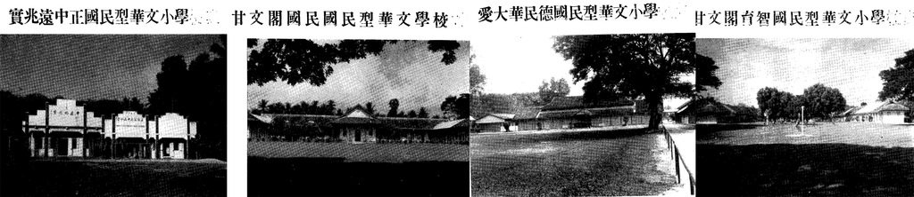
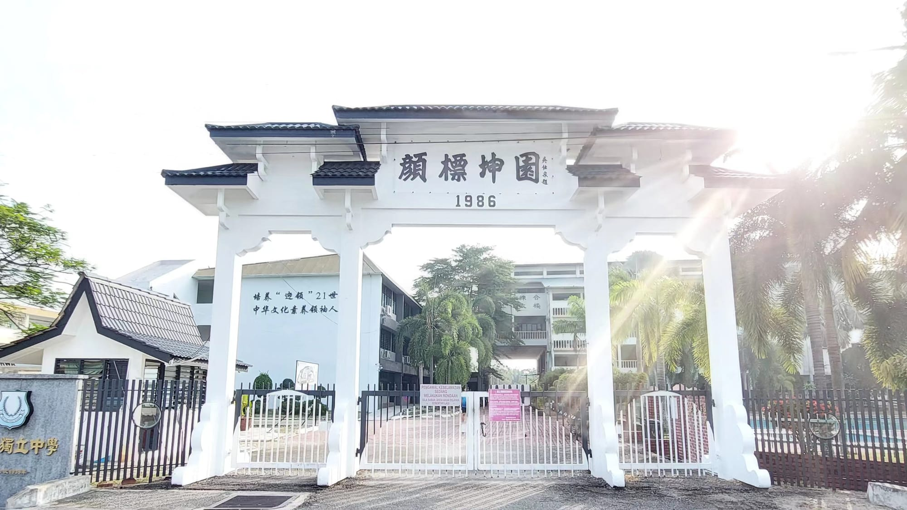
南华春秋 · 1935–至今
四间中学部合并、日据停办、战后复办、改制存亡、救校迁校、扩建腾飞——南华独中的九十年，是曼绒华社一代代人接力点灯的九十年。
本页史料整理自本校《勿忘历史 · 牢记使命》专栏。
1935 – 1945
The Birth of Nan Hwa & the Continuity of Culture
南华中学创立于1935年，历经筹建、扩展与日军侵占停办，师生校友抗敌不屈，展现民族精神与教育使命。
今天巍峨耸立在颜标坤园壮丽堂皇的南华独中，创立于1935年11月24日。因英殖民地教育部教官吴迈氏的献议，召集当时各地小学的董事部，以及天定州各社会团召开会议，议决将当时的甘文阁国民、育智、十字路中正、爱大华民德等四间中学部合并，成立“南洋华侨中学”，简称“南华中学”。

1936年1月12日宣告成立并开学，推选王叔金先生为第一届常务董事会董事长兼建校委员会主席。校长为协和大学学士林局仁先生，学生百多位。当时的校舍，乃临时租用甘文阁李可祯牧师之洋楼，学生逐渐增多，教室不敷应用，准备购地自建校舍。在校董同仁等的努力下，购得甘文阁（旧校址）六英亩之地皮，于是积极进行筹募活动。
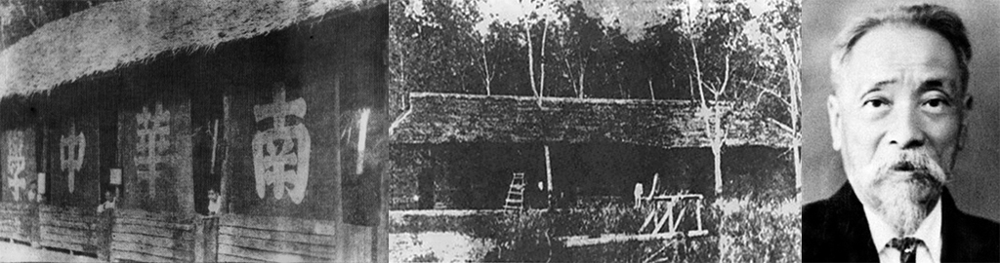
戴保珍先生接任董事长，他开辟了运动场及建校舍，并获得胡文虎、文豹昆仲独资捐建大礼堂，耗时四年，教室、虎豹大礼堂先后落成，当时只设初中部及简易师范部。
李可祯先生担任董事长。
1939年至1940年陈良知先生担任董事长，林居仁先生掌校三载。接着第二任校长为协和大学的黄则吾先生，学生激增三百多人，并增办高级师范，两年期满，黄则吾先生辞职。
1941年12月8日日军入侵，马来亚沦陷。学校停课，南华遭受洗劫，师生被害，损失惨重，被迫停办。大礼堂与课室都沦为收藏树胶场所与养牛栏。校友、董事奋起抗敌。陈良知、方肇荣、潘高务、丁道敬、林光华、杜龙山、江傅灿等人相续遇害；校友王文华为抗日军事委员会主席，改名陈平；古标权为抗日驻实天主任，改名马平魁。个个奋勇抗日、牺牲，威武不屈，令人敬佩。其他学生从农从商，不为敌人利用，此乃民族精神光荣。
1946 – 1961
In the Aftermath: Persevering Through Adversity
1946年复办南华，历任多位董事长与校长，扩建运动场、大礼堂与科学馆，师生校友积极捐助，推动校务发展。
战事结束后，停办三年余的南华，于1946年正月3日由王叔金先生及社会热心教育人士议决复办。首任复校校长为暨南大学学士金能襄先生。在董教生三方面通力合作下，校舍教具等相继就绪，便于1946年1月28日复课。
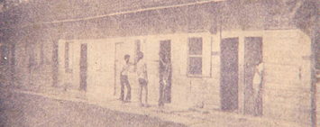
战后复校的首任董事长是王叔金先生，1948年王秉惠先生就任董事长一职。
校务与日俱增，并于1954年增办高中部。1955年由林守駓先生接任董事长，1957年董事长为苏钊化先生。至于校长方面，1949年周祖胜担任校长，1957年则由沈志中先生担任第三任校长。
1958年杨武明先生出任董事长，第四任校长为天津南开大学及日本早稻田大学理学士陈一征先生。由于学生日益增加，原有之操场及礼堂不敷应用，因而将教师宿舍后的六英亩土地开辟为运动场。在董教生团结一致的力量下，学校运动场于是年9月间完成，并于9月29日第一届天定华校联合运动会中的公开项目越野赛跑启用，恭请苏清楚先生剪彩开幕。
同年筹建大礼堂及科学馆，几经讨论、设计绘画，9月间正式发动募捐。当时由热爱南华中学的林心汉医生出任筹委会主席，他慷慨捐助建筑费一万元以为首倡，其他董事与筹募委员亦不落人后地各捐五千、三千、两千不等；校内师生掀起了建校献捐运动的高潮，地方上各社团及爱护本校人士、星马各地的校友都热烈响应，遂于11月24日校庆纪念日举行开土奠基大典。不幸的是1959年建筑工程正在积极进行、各方募款陆续收缴之际，却遇上州议员竞选及国会大选，两次选举分裂了地方上的团结，募捐工作迟滞，建筑工程被迫停顿。
1961年，林心汉医生上任第十一任董事长一职。第五任校长为复校第一任的金能襄先生，金校长上任后，继续筹建大礼堂及科学馆。
1962 – 1978
Reborn Stronger, Achieving Greater Glory
1961年10月21日，国会通过《1961年教育法令》，强调发展以国语为主要教学媒介的教育制度。这对南华是沉重的打击——南华坚持华教，宁可放弃津贴金，成为独立中学！20世纪70年代，南华独中一度濒临关闭，以颜清文律师为首的华教工作者展开轰轰烈烈的拯救运动：拯救的不仅是南华独中，更是华文教育。
22万元之大礼堂及科学馆建设方告落成，由当时副教育局长亚都哈蜜干主持开幕。由于教育政策转变，南华中学遂分为南华国中与南华独中：前者由金能襄先生担任校长，后者则由南大学士江禄森先生处理校务。独中学生人数逐渐减少，江禄森先生辞职后，由台湾师范大学毕业的张奕东先生掌校。
1964年由陈扬炎先生接任校长职务。1969年，陈际强先生担任代校长至4月，5月开始则由林秀文先生出任校长。
学校经济拮据，在存亡边缘挣扎。4月4日由校方发函召开董教、社团以及校友等特别会议，毅然议决继续把南华独中办下去，并即刻开展救校运动。原任董事长颜清文律师再度被推选为董事长，南大理学士许瑞成先生出任复兴后首任校长。
1972年学生人数增至120位，为了南华独中的发展，在董教生三方面通力合作之下，兴建独中第一期四间教室；1973年兴建第二期校舍八间教室；1974年兴建第三期校舍，内设有打字室、贩卖部、摄影室及冷气图书馆，学生人数增至三百多位。
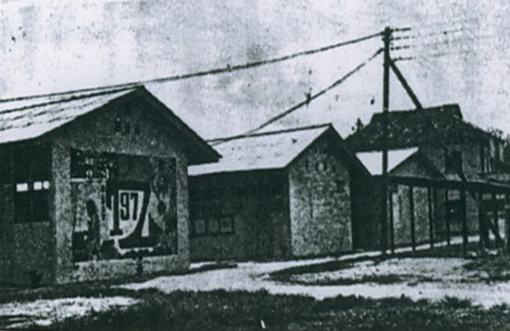
1976年政府实施贷书及免学费制度，独中生源深受打击，南华独中学生人数骤然下降。1977年许瑞成校长辞职。1978年台湾师范大学理学士蔡传山先生担任第二任校长，学生人数132位；至年杪蔡校长辞职，后由台大文学硕士林亚泰先生担任第三任校长，全校学生人数只有125名。年杪，董事部、社会人士及教职员同心协力，改变招生策略，先后在爱大华、邦咯岛及实兆远等区召开座谈会，获得各界热烈反应。
1979 – 2010
Innovation and Progress with the Times
南华独中自1980年起迁校扩建，创办专修班与国际招生，兴建多栋校舍及设施，积极筹款办活动，推动学术与艺体发展，迈向现代化与国际化。
学生人数增至225人，宿舍生人数68人。同年4月30日，国泰机构以《师弟出马》为南华独中义映。
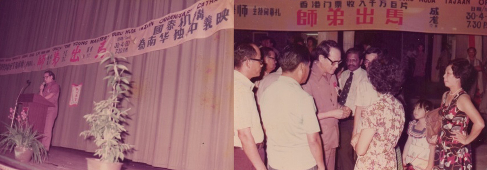
董事部及赞助人大会议决迁校另谋发展，以期南华独中能够负起特定的教育使命：一方面维护传统华文中学的生存与发展，另一方面开办各项专修班，适应当前华社的需求。董事长颜清文律师献出其独资购买、座落于爱大华与实兆远双溪万宜旁的一块七英亩地，作为建设新校舍用途。颜律师对华教的热心，激起了各界响应，纷纷出钱出力。
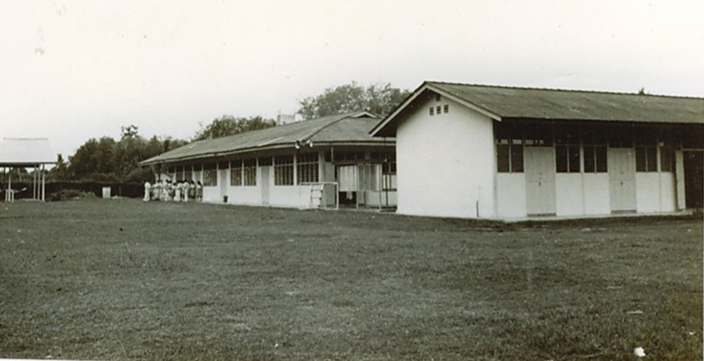
南大文学士陈启衍先生受聘为校长，学生人数有290位。同年9月16日发出迁校通知函。
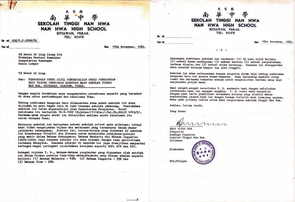
学生人数达320位。同年4月27日进行新校舍动土典礼，后发动全校师生筹募建校基金，获得社会各阶层人士支持，8月6日正式动工。是年开办大学先修班及中级商科专修班。
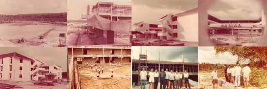
正月4日举办南华独中义卖会，筹募建校基金。是年学生人数440位，8月31日新校舍落成，同日迁入新校舍上课，并通过赞助人大会议决新校园命名为“颜标坤园”，同年增设视听英文打字班。
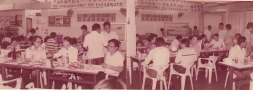
成立电脑俱乐部。苏清楚局绅学生楼落成（女生宿舍），可容纳150位寄宿生，全校学生人数达870名。同年12月28日，苏铁汉先生庆祝八秩寿辰宴会，全部贺仪捐助充作南华独中建校基金。
4月5日，在董事长颜清文律师领导之下的建达集团斥资兴建四层学生楼，举行奠基典礼暨第二届常年运动会，恭请时任副教育部长黄俊杰主持奠基典礼，副新闻部长黄秋贵则主持运动会开幕典礼。是年9月委任训导主任张文良为代校长；11月建达学生楼落成（男生宿舍），可容纳250名寄宿生。
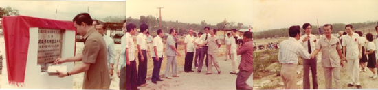
1987年邀请毕业于纽西兰威灵顿维多利亚大学的教育硕士黄和平先生出任校长，学生人数大突破，增至1100多名，为复校以来最多人数的一年。1988年，耗资十万元设立电脑中心，及耗资十万余元成立军铜乐队；大学先修班增设理科班，使先修班课程更趋完整。1989年2月23日，余雪梅游泳池举行动土礼。
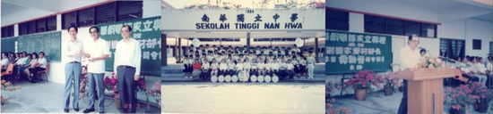
7月，耗资50万元的五层楼新宿舍（马培斯男生宿舍）以及耗资25万元的余雪梅游泳池建竣。同年举行万人宴，庆祝以上两项建校计划的完成。
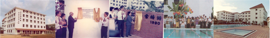
1991–2010 年的篇章，史料正在陆续整理中。
2011 – 2020
Towards Excellence: Holistic Education
2011至2020年间，办学发展、师生交流、校园建设与赛事获奖不断推进；积极筹款扩建设施，推动文化与教育交流，并于2014、2015年连续荣获马来西亚教育部私立学校组“五星级卓越学校奖”。
本时期史料正在整理中。2018 年以后的校园纪事，可在按年新闻馆逐日回看。
2021 – 至今
Staying True, Writing New Chapters
课程改革2.0、AI 创客空间、技职教育大楼、中国茶文化馆——这一段历史，正在发生。
南华的每一天都在被记录：每日南华 · 按年新闻馆（1,198 篇）；2026 年，我们迎来九十周年校庆。